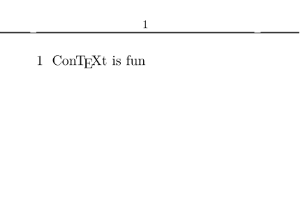
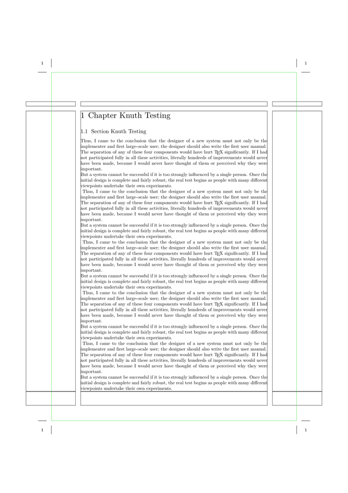
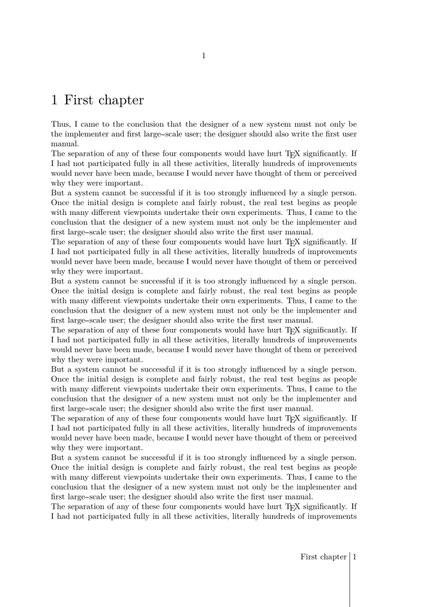

Contents
Headers with centered content
ConTeXt offers the possibility to have mirrored headers (for odd and even pages); content can be in two parts, at the inner and outer margin of each page. But how do you get a header that will have one part of its content centered and one part in the outer margin? (This is a common setup for books: chapter title centered, page number in outer margin.) Hans posted this solution to the list:
\setuppagenumbering[alternative=doublesided] \setupheadertexts[] \setupheadertexts[\setups{text a}][][][\setups{text b}] \startsetups[text a] \rlap{\pagenumber} \hfill \getmarking[chapter] \hfill \llap{whatever} \stopsetups \startsetups[text b] \rlap{whatever} \hfill \getmarking[section] \hfill \llap{\pagenumber} \stopsetups
The use of the TeX macros \rlap and \llap allows centering of content. Note that \pagenumber gets you the number prior to conversion; if you're using \setupuserpagenumber[numberconversion=...] then you'll want to use \userpagenumber instead.
How to get a line under the header
with \setupheader
-
\setuppapersize[A8,landscape] \setupheader[after=\hrule] \setuplayout[headerdistance=5mm] \starttext \startsection [title={\ConTeXt\ is fun}] \stopsection \stoptext
- 
Using capitals
In the previous example, the chapter title and the section title were fetched with the macro \getmarking which wraps around \fetchmark. However, in case you need a raw version of the mark, say for instance to put it uppercase, you may use this setup instead:
\startsetups[text a] \rlap{\pagenumber} \hfill \expanded{\uppercase{\fetchmark[chapter][first]}} \hfill \llap{whatever} \stopsetups \startsetups[text b] \rlap{whatever} \hfill \expanded{\uppercase{\fetchmark[section][first]}} \hfill \llap{\pagenumber} \stopsetups
You can replace \uppercase by \WORD and so on.
Marginal headings and centered headings
The following file gives a way to achieve marginal and centered headings for doublesided documents. Experiment to achieve other effects!
-
% output=pdf interface=en \setuppapersize [A5][A4] \newdimen\Margin \Margin=3cm \newdimen\MarginRaise \MarginRaise=56ex \setuplayout[width=middle, height=middle, footer=3\bodyfontsize, header=\bodyfontsize, headerdistance=\bodyfontsize, bottom=3\bodyfontsize, location={middle,doublesided}, margin=\Margin, marking=on] \setuppagenumbering[alternative=doublesided, location={footer,middle}] \setuptexttexts[margin][][\setups{text a}][\setups{text b}][] \setuptext[style=\tf,state=high] \startsetups[text a] \raise\MarginRaise\hbox{\vtop{\hsize=\Margin% \startalignment[right] \getmarking[chapter] \stopalignment }} \stopsetups \startsetups[text b] \raise\MarginRaise\hbox{\vtop{\hsize=\Margin% \startalignment[left] \getmarking[section] \stopalignment }} \stopsetups \setupbottomtexts[pagenumber] \setupbottom[style=\tf,state=high] \setupfootertexts% [][\setups{text c}][\setups{text d}][] \setupfooter[style=\tf, state=high] \startsetups[text c] \midaligned{\raise2\bodyfontsize\hbox{\getmarking[chapter]}} \stopsetups \startsetups[text d] \midaligned{\raise2\bodyfontsize\hbox{\getmarking[section]}} \stopsetups \setupinmargin[align=inner, style=\tfx\setupinterlinespace] \showframe \starttext \chapter{Chapter Knuth Testing} \section{Section Knuth Testing} \dorecurse{20}{\input knuth\par\ } \stoptext
- 
You can suppress or bypass a header or footer on a chapter page like this:
% with header=high the text area of the page will extend up % into the space where the header normaly sits \setuphead[chapter][header=high,footer=none] % header=empty leaves the header area intact, % but does not fill it with any text \setuphead[chapter][header=empty,footer=none]
Works only if the head title starts a new page. Since section does not do this by default, then you must write
\setuphead[section][page=yes,header=high,footer=none]
The options for 'header=' and 'footer=' are none,empty,high,nomarking.
Substituting a shorter lemma for a section header
Given a global setup such as
\setupheadertexts% [][section][chapter][]
Sometimes the section title is too long to fit in the header. Instead of manually inserting a new \setupheadertexts comamnd you may use something like
\startsection [title={Here is a section title too long to fit in the header}, marking={Here is a section title}]
Similarly, you can send shorter lemmas to the table of contents or to bookmarks. So the relevant keys include
title marking list bookmark
Examples
Nice classic design
-
\startsetups [footer:leftpage] \prefixedpagenumber \space \undepthed{\blackrule [ width=\linewidth, height=\strutht, depth=\dimexpr\footerheight+\bottomspace\relax, ]} \space \labeltext{chapter} \getmarking[chapternumber] \stopsetups \startsetups [footer:rightpage] \getmarking[chapter] \space \undepthed{\blackrule [ width=\linewidth, height=\strutht, depth=\dimexpr\footerheight+\bottomspace\relax, ]} \space \prefixedpagenumber \stopsetups \setuplabeltext [en] [chapter=Chapter] \setuphead [chapter] [bodypartlabel=] \setupfootertexts [] [\directsetup{footer:rightpage}] [\directsetup{footer:leftpage}] [] \setuppagenumbering [alternative=doublesided] \starttext \startchapter [title=First chapter] \dorecurse{10}{\input knuth} \stopchapter \startchapter [title=Second chapter] \dorecurse{10}{\input knuth} \stopchapter \stoptext
- 
Further reading
- Empty the headers of pages preceding a new chapter , see pages dedicated to formatting of headlines.
- Page numbering in words